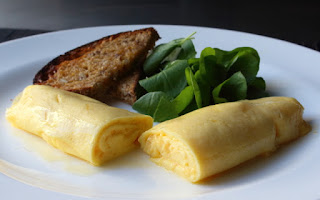

back to recipe list
French Omelette

Description
This particular dish I would like to master one day. I first came across
this dish from watching a 4 minute youtube video of Jacques Pepin making
the perfect french omelette.
Many would describe this dish as 10% ingredient and 90% technique. While
it may seem like a very easy dish to make when watching the video, enough
comments will tell you that you will be eating many scrambled eggs.
Ingredients
- 3 large farm-fresh eggs
- 1/4 teaspoon kosher salt
- 1/2 teaspoon cold water
- 2 tablespoons unsalted butter (1 1/2 for the pan, and 1/2 for when it's done)
- cayenne or white pepper to taste, optional
Steps
- Get 3 large eggs in a bowl
- Add a pinch of salt and a few drops of cold water
- Bust the yolks, and whisk for a minute or two until thin and drippy
- Prep a 9-10 inch non-stick pan at medium high heat and melt the butter
- Before butter sizzles, pour in the eggs and start the 3 stage Omelette Protocol
-
Scrambling: Gently scramble the eggs in a circular pattern
while shaking the pan to level the loose eggs and sweep the edges inwards.
Practice and master the figure eight scramble pattern instead if you want
to impress anyone watching.
-
Spreading: Switch to spreading when the eggs are getting firm.
Reduce heat to low and simply spread runny eggs around until the surface is wet
but no longer runny. If the surface is dry, make sure to say out loud that
you're actually craving some scrambled eggs instead before you abort Omelette
Protocol and pivot to the Doomsday Scrambled Eggs Plan.
-
Folding: Turn off heat and start folding the eggs from the
handle. Leave a couple inches of the eggs to fold back into itself so that the
seam ends up on the top. Proceed to gently
caress the omelettle to enhance its shape while whispering words of affection.
- Add a few chuncks of butter around the omelette to improve texture and removal
- Push omelette to the edge of the pan and flop into a plate with the seam facing down
- Shape the omelette even more and brush more butter on top for closer perfection
- Wipe away the tears in your eyes as you eat buttery scrambled eggs
back to top